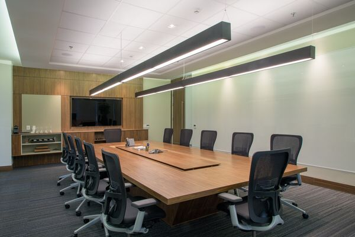

Saúde
A aréa da saúde possuí vários cursos essências para a formação nas suas devidas áreas. Tais dos cursos que podemos destacar como: Análise clínica, enfermagem, fisioterapia, estomatologia, entre outros. A área da saúde possuí salas climatizadas e bem higienizadas e os seus laboratórios estão a ser cada vez mais exploradas pelos seus estudantes, os estágios são feitas em hospitais renomeadas no nosso país com técnicos capacitados e dotados na mesma área. De asseverar que em cada ano estão a ser finalizados mais de mil alunos nos cursos diferentes na aréa da saúde.
Politécnico
Por ser uma das áreas muito vasto em termos de cursos, a área do Politécnico proporciona aos seus estimados estudantes cursos técnicos e práticos de uma maneira profissional á táctica ao desenvolvimento da sociedade. Nos cursos como : Informática, Electricidade, Construção civil, Mecânica, entre os demais cursos. Possuêm oficinas muito bem organizada como no curso de Mecânica, Electricidade e Construção civil, têm laboratórios para cursos de Informática, Contabilidade e aos demais cursos.
Transporte Escolar
O nosso transporte é ideal para todos os alunos da nossa Instituição desde que sejam pontuais aos locais solicitados pelos mesmos, a Instituição possuí automóveis de longa capacidade para suprir com as necessidades dos alunos em termos de distâncias que lhes pertubam. Os automobilistas são capacitados e dotados no objectivo concreto de proporcionar uma viagem sofisticada aos alunos requerentes a este meio. Em termos de transportes o nosso objectivo é facilitar os meios de chegadas de alunos na Instituição e nas suas devidas residências.
Salas de Reuniões
As nossas salas de reuniões proporcionam maior condições nos momentos de reuniões com os encarregados de educação para que a comunicação por sua vez seja sutil e necessária por lado dos encarregados da educação. Também permite por sua vez nas melhorias das pré defesas para os finalistas na preparação do desenvolvimento de conteúdos para a defesa final. Nas actividades escolares faz-se lá apresentação de trabalhos científicos, teatros, músicas, e aos demais actividades realizadas dentro da nossa Instituição.

Professores Qualificados
Os nossos Professores são qualificados para exercer as suas funções devida a qualidade de tabalho que a Instituição exige, pelas suas eminências muitos deles são Doutores, Engenheiros, Docentes e Mestres para uma edificação plena de técnicos profissionais nas distintas áreas de formação. Os mesmos desenvolvem aos alunos uma visão íntegra do saber e promovem uma orientação escolar e profissional na formação e nas suas atitudes integradoras.